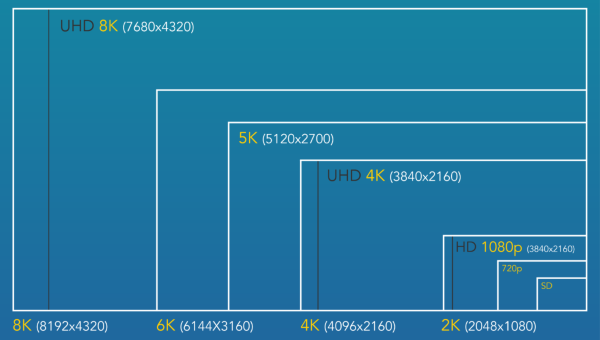

8k-ás Monitor Ismertető

A 8K felbontás 16-szor jobb, mint a Full HD
A 8K formátum. A felbontás 7680 × 4320 pixel, illetve 4320p. A 2160p-s 4K-felbontással összehasonlítva mindez 4×
több pixelt jelent.
Míg a 8K-s megoldások a gyakorlatban még mindig nagyon ritkák, első benyomásra úgy tűnik, van még mire várnunk.
Ha például olyan nézők közé tartozol, akiknek az 1080p felbontás még mindig a maximum, ehhez viszonyítva a 8K
formátum 16-szor részletesebb képet nyújt!
A 8K felbontás, akkor akár 120 Hz-es képsebesség is rendelkezésedre áll, amely kétszerese a standard
képernyőknek. A 8K felbontásnak köszönhetően a játék szintén teljesen új dimenziót nyit a felhasználók számára.
Az érme másik oldala a hardver, amely rengeteg képpontot kínál magas képsebesség mellett - a ma rendelkezésre
álló grafikus kártyák viszont sokszor 4K-nál húzzák meg a határt, így még várhatunk további hatékony komponensek
megjelenésére is.